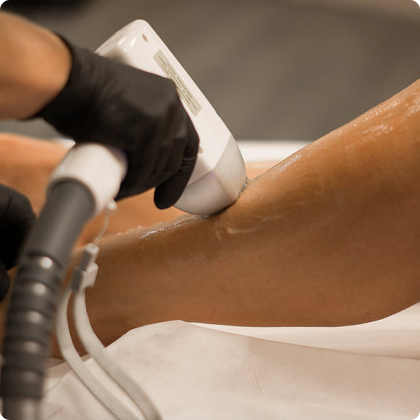
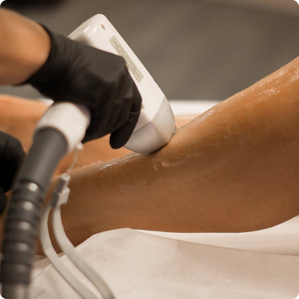

Как действует осветляющий гель?
Активные осветляющие компоненты геля pearlsmile активизируются с
помощью лампы холодного света и обесцвечивают органические
пигментирующие вещества в зубной эмали. Гель не нарушает
кислотного баланса и не обезвоживает денту. Холодный свет лампы не
раздражает десна, поэтому процедура гарантированно безболезненна и
не имеет побочных эффектов.
Есть ли противопоказания к процедуре?
Исследования показали, что косметическое осветление зубов
абсолютно безопасно. Однако в силу этических норм, проводить
процедуру осветления зубов не рекомендуется в переод беременности
и кормления. Так же стоит учитывать, что во время процедуры не
оказывается никакого воздействия на искусственные зубы.
На что следует обратить внимание после проведения процедуры?
Действие геля продолжается в течении 2 часов после окончания
процедуры. В течении этого времени не рекомендуется, курить,
употреблять еду и напитки, кроме воды. А также следующие 2 дня
после процедуры рекомендуем избегать напитков и продуктов,
провоцирующих пегментацию зубов.
Как часто можно повторять процедуру?
Услуга косметического осветления зубов не имеет ограничений в
интервалах между процедурами. Вы можете постоянно иметь ухоженную
белоснежную улыбку, воспользовавшись услугой в любой важный для
вас момент, будь то свадьба, свидание или собеседование.
Сколько месяцев сохраняется результат?
Результат сохраняется в течении 3-6 месяцев. Во многом это зависит
от вашего образа жизни. Для достижения более длительного
результата рекомендуем воздержаться от курения и использовать
жемчужную пудру PEARLSHINE утром и вечером.
Противопоказания.
• Беременность.
• Период кормления грудью.
• Герпес.
• Дерматовенерологические заболевания в стадии обострения (экзема,
акне, псориаз).
• Наличие родинок на планируемой области обработки.
• Витилиго.
• Инфекционные или простудные заболевания.
• Сахарный диабет.
• Заболевания крови.
• Варикозное расширение вен.
• Онкологические заболевания.
• Повреждения кожи (царапины, ожоги, расчесы, гнойнички и др.) в
области обработки.
• Психические заболевания с психомоторным возбуждением (световая
эпилепсия).
• Прием антибиотиков за 14 дней до сеанса лазерной эпиляции.
С какого возраста можно делать?
Возрастных ограничений на процедуру нет, но детям её делать не
стоит. В период полового созревания (12-16 лет) у девушек и юношей
активно растут волосы: и жесткие, и пушковые. Поэтому, чтобы
удалить волосы с помощью лазерной эпиляции, им придется провести
намного больше сеансов с короткими паузами, чем же взрослым. Что
касается пожилых людей, то у них чаще всего волосяной покров
светлеет, поэтому он плохо воспринимается лазером.
Сколько нужно процедур и от чего это зависит?
Желаемый результат вы заметите спустя 4-6 процедур. Это условные
рамки, курс может состоять из 10 и даже 15 сеансов. Это зависит от
зоны эпиляции. Полный курс для тела состоит из 6-8 сеансов, а для
лица – до 10-12. Между сеансами необходимо делать интервалы по 4-6
недель.
Вредна ли лазерная эпиляция?
Нет, процедура полностью безопасна, если выполняется верно.
Световые волны не проникают глубже подкожно-жировой клетчатки,
поэтому не могут влиять на внутренние органы. Коже лазерное
излучение не вредит.
Можно ли в баню после эпиляции?
Нет. Минимум на 3-4 дня откажитесь от посещения бани и сауны. Кожа
после процедуры травмирована и распаривание увеличит время
заживления. А если в расширенные поры попадет грязь, она вместе с
остатком погибшего волоса может вызвать воспаление. Появление
маленьких прыщей не доставит вам удовольствия, поэтому лучше
потерпеть и сходить в баню чуть позже.
Можно ли загорать или ходить в солярий после эпиляции?
Нет. Воздержитесь от принятия солнечных ванн минимум на 7-14 дней
после процедуры.
Отзывы онкологов об эпиляции.
Женщины боятся идти на лазерную эпиляцию из-за опасений по поводу
рака. Онкологи не видят в процедуре угрозы, если она проводится на
сертифицированном аппарате. Вероятность получить излишнее
облучение ультрафиолетом в разы больше при загорании на солнце без
использования защитных кремов. Во время процедуры лазерные вспышки
очень короткие и быстрые. Волны доходят лишь до поверхностных
слоев кожи, не влияя на глубокие ткани и внутренние органы.
Что будет с бровями, их нужно полностью сбривать и выщипывать?
Сбривать брови ни в коем случае не нужно, и выщипывать перед
процедурой не нужно. Мастер подкорректирует и выщипает их только
там, где они не совпадают с новой, правильной формой и Вы просто
будете поддерживать эту форму в дальнейшем.
Перестают ли расти волосы в зоне татуажа?
Краска вносится в роговой слой кожи, волосяные луковицы находятся
намного глубже. По этому волоски не повреждаются и не выпадают.
В какое время года лучше делать татуаж?
Татуаж – это процедура, которую можно делать в любой период года,
как Вам самим будет удобнее.
Почему нельзя делать татуаж в период лактации?
Период лактации является относительным противопоказанием для
проведения процедуры перманентного макияжа, так как из-за
изменения гормонального фона пигмент может плохо взяться.
Как часто нужно снимать искусственные ногти, чтобы дать
натуральным “подышать”?
Дело в том, что ногти — это роговые образования, имеющие
пластинчатую структуру. Они не способны дышать, испарять влагу,
ногти не требуют пищи и отдыха, живым является только матрикс
(сердце ногтя). Он находится под задним ногтевым валиком и
снабжается кислородом посредством кровоснабжения. Сама ногтевая
пластина, которую мы используем в наращивании, представляет собой
мертвый слой кератина. Ногти снимать нужно лишь тогда, когда Вы
решите, что больше не хотите наращивать их какое-то
продолжительное время.
Наращивать ногти вредно?
К сожалению, как и во многих других областях, в нашем деле часто
встречаются неграмотные “мастера”. Люди, не имеющие даже
представления, что такое ногти, без должного образования и опыта,
иногда вообще самоучки, которые просто сэкономили на обучении, на
материале и так далее. Нарушая все технологии, они спиливают
клиентам натуральные ногти до мяса!
Почему нужно делать коррекцию каждые три недели?
На ногтях есть место, где при ударе, ушибе, или просто, если
зацепиться ногтем, он сломается. Эту зону мы называем – зона
стресса (ЗС). Для того чтобы ноготь не сломался, ЗС укреплена
особенно. От этого ногти носибельны и менее хрупки. Но, помимо
того, что ноготь должен быть носибельным, он также должен быть
эстетически красивым. Поэтому сделать все зоны толстыми
невозможно, очень сильно пострадает внешний вид. За три недели ЗС
смещается со своего места на 3 мм, соответственно, пропадает
защита слома. Ногти становятся гораздо более хрупкими. Уж не
говоря о том, что сросшие ногти это не эстетично.


 



 Daugavpils, Sakņu iela.
Daugavpils, Sakņu iela.